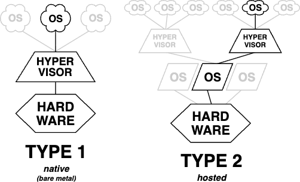

← GenAI and Trusted Execution Environments
01 - Types of TEEs
2025-08-26
Trusted Execution Environments are special pieces of hardware that encrypt data in-use so to prevent attackers from compromising running applications.
Hardware providers including ARM, Intel and AMD have built various TEE solutions that depend on the scope of the Trusted Computing Base.
- Intel's Secure Guard Extension (SGX)
- AMD Secure Encrypted Virtulization with Secure Nested Paging (SEV-SNP)
- ARM TrustZone
- Confidential Computing (CoCo)
For the sake of scope reduction, I will only explore Intel's SGX, AMD's SEV-SNP and CoCos, going from smallest TCB to largest TCB.
The TEE Zoo
For each TEE solution, we will discuss
- its Architecture;
- an example of a working TEE;
- its use-cases.
Intel SGX
Architecture
The SGX architecture relies on creating a reserved region of memory, the Enclave Page Cache that holds encrypted data. This part of the memory is encrypted by special hardware that lives inside the CPU. During boot, the CPU will generate a hardware-derived key, the Root Sealing Key (RSK), which is used by Memory Encryption Engine (MEE) (also living inside the CPU) to encrypt/decrypt any data leaving/entering the CPU.
Intel's SGX also includes special instruction sets including ECREATE, EENTER, etc., which help separate the User Runtime System (urts) from the Trusted Runtime System (trst).
No one, not even root user has access to the EPC in DRAM. Further, data is only decrypted inside the CPU, so L1/L2/L3 caches still hold encrypted data. The encryption process does have some performance overheads.
The control flow works as follows:
- Enclave is created using
ECREATE; - Data is loaded using
EADD; - Enclave is initialized using
EINIT; - Enter the enclave using
EENTER; - Run trusted function;
- Exit the enclave using
EEXIT.
The ECALL/OCALL instructions allow calling urts/trst code from trst/urts respectively.
Example - a minimal SGX enclave
This minimal-sgx-enclave uses the sgx-linux project.
We will assume you have installed Intel SGX SDK and Intel SGX PSW.
NOTE: I had some difficulties installing SGX Linux on my Ubuntu 24.04 box. This article was very useful
git clone git@github.com:jfgrea27/minimal-sgx-enclave.git
# build
make
# run
./app
You have ran your first enclave!
The repository explores SGX more in depth including:
Discussion
As we have detailed in SGX's architecture above, the system relies on a very small TCB that includes the CPU and its microcode. Data is always stored in EPC (encrypted), which limits SGX use-cases to small applications, although Azure do provide some of their DCdsv3 series with up to 256GiB of EPC, as noted here.
It is worth noting that SGX are not fully immune. Since data is not encrypted in L1/L2/L3 caches, it is susceptible to side-channel attacks, including speculative execution attacks (e.g. Meltdown & Spectre).
A typical use case for using SGX Intel as TEE would be smallish applications that require small trust - for instance a cryptographic key/password store.
There has been notable work around distributed SGX architecture (e.g here), which look interesting. However, the limitations of running SGX only on CPU and not GPU make AI workloads for instance limited.
AMD SEV-SNP
Architecture As we have seen in Intel SGX, the memory limitations of the EPC make deploying large scale TEE applications in the SGX architecture pretty tricky.
AMD came up with a compromise: rather than have an enclave at the process level, why not make one at the VM level.
The advantages of forgoing this security are significant:
- Minimal changes to your applications are required to run it in an AMD SEV-SNP enclave; a lift-and-shit option if you want to deploy quickly.
- More flexible sizes/general availability than Intel SGX.
Clearly, an increase in the TCB will increase the attack surface. Any vulnerability in devices (e.g. compromised NICs) could be a threat due to the reduced isolation of the enclave.
Example - Deploying a TEE on a Cloud provider
In the repository az-amd-sev-snp-playground, you can deploy on Azure both a CPU and GPU AMD SEV-SNP.
Cloud providers such as Azure will actually add
Discussion
Lexicon
Guest vs Host OS
In the context of Virtual Machines (VMs), we distinguish Guest OS running the application inside the virtualized hardware from Host OS running the hypervisor.
In Type-1 hypervisors (or bare-metal hypervisor), there is no such Host OS.
In Type-2 hypervisor, there is a Host OS that runs the hypervisor amongst other applications.
Most cloud providers predominantly deploy applications in VMs running Type-1 hypervisor, as illustrated below

As a contrast, if you were to run a VM on your laptop, this would be a Type-2 hypervisor as your laptop OS is running the hypervisor (and guest OS) as well as other applications (like browser, etc.).
Trusted Computing Base
The Trusted Computing Base (TCB) is the minimum set of hardware, firmware and software components that must be trusted to enforce the security properties of a system. If any part of the TCB is compromised, the security guarantees of the system (e.g. TEE) can be broken.
The smaller the TCB, the less must be trusted to be secure, hence better security.
In the context of TEEs, the TCB varies depending on the type of TEE. For instance, in Intel's SGX, the TCB is very small including CPU, enclave runtime and enclave code, whilst for AMD SEV-SNP, the TCB is larger since the entire guest OS must be trusted.
Smaller TCB might not always make sense, especially if your application has a significant memory footprint. Please read The TEE Zoo for details on this.
Remove Attestation
Remote attestation is a security mechanism that lets one computer (the verifier) cryptographically prove that another computer (the prover) is running specifc, untamptered software on genuine trusted hardware.
Attestation works as follows:
- When the trusted environment starts, the hardware computes measurements inluding code, initial data, configuration, etc. These are called attestation measurements.
- The hardware signs these measurements using a device-rooted key that only genuine hardware has.
- The remote party verifies the authenticity and tamper-proofness of these measurements via an attestation service.
Since this process is specific to the hardware of the system, different TEEs will have different attestation flows.